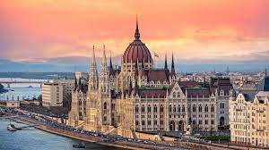
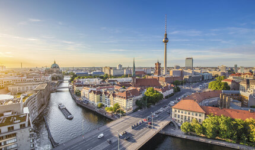
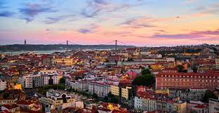
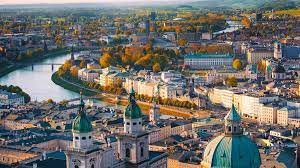
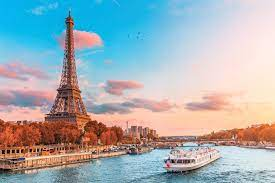

Home
Links
Contatti
LE CINQUE CITTÀ PIÙ BELLE D'EUROPA
Matilde Coco
Ultimo aggiornamento: oggi
1.
Budapest
Ungheria
Budapest è classica ed imponente, ma anche economica e divertente. È soprannominata la "Parigi dell'Est" per alcuni paesaggi ed angoli cittadini. Dall'unione di Buda e Pest, divise dal lento scorrere del Danubio, nasce questa maestosa città, nello stile dell'antica Mitteleuropa così come Vienna e Praga. Di giorno si possono visitare interessanti musei e storiche chiese, per poi immergersi nella fervida vita notturna tra i locali della zona.
il 30% dei partecipanti al nostro sondaggio l'ha votata come la migliore città d'Europa

2.
Berlino
Germania
Dal dopoguerra al 1989, Berlino ha saputo rivalutare e riscoprire i propri tesori della storia dell'Umanità, celati da questo periodo oscuro. Ad oggi Berlino è conosciuta anche come una delle capitali della musica elettronica, del design e della moda.
il 22% dei partecipanti al nostro sondaggio l'ha votata come la migliore città d'Europa

3.
Lisbona
Portogallo
Popolare, indolente e malinconica come tutte le grandi città di mare, Lisbona viene spesso sottovalutata ma è ricca di fascino. Da scoprire i quartieri dal Bairro Alto fino alla Baixa, passando per Belem e il Chiado: qui potrete scoprire la vera identità culturale di Lisbona, ascoltare ed apprezzare appieno il caratteristico e malinconico fado suonato in qualche locale tipico.
il 18% dei partecipanti al nostro sondaggio l'ha votata come la migliore città d'Europa

4.
Vienna
Austria
Vienna è una città ospitale, a misura d'uomo e ricca di cose da vedere. Offre grandi musei celebri a livello internazionale, la cui sede è stabilita in antiche residenze della dinastia asburgica, inoltre dispone di un centro storico meraviglioso, dichiarato Patrimonio dell'Umanità dall'UNESCO.
il 17% dei partecipanti al nostro sondaggio l'ha votata come la migliore città d'Europa

5.
Parigi
Francia
Da sempre considerata il centro del romanticismo, tanto da essere conosciuta anche come la capitale degli innamorati, Parigi riserva innumerevoli attività da fare e luoghi da visitare, per ogni tipo di turista. Non c'è nulla da dire su Parigi che non sia già stato detto. E' una delle città più belle e visitate del mondo
il 13% dei partecipanti al nostro sondaggio l'ha votata come la migliore città d'Europa
